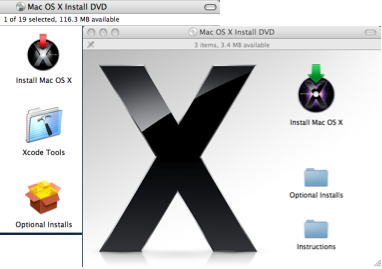

Thanks to Robert Coghill for sponsoring the Apple port.
Contents:
Before you install FSL you should first ensure that you have the X11 windowing system installed. To do this, look for the X11 application in the Utilities folder within the Applications folder (switch to the Finder and hit Apple-Shift-U to open the Utilities folder); by default Macs don't generally come with this installed (you'll almost certainly need X11 later for things other than FSL anyway.)
If you do not have X11 then install it from the OS X Install CD. Insert the CD, open it in the Finder, scroll down to the Optional Installs package and double click to launch the installer. Click through until the custom install window appears, expose the Applications section and select X11. Now click on 'Install'
|  | |
An automated installer, fsl_installer.sh is available to carry out the installation. In addition it will install FSLView into /Applications, automatically configure your environment to enable you to run FSL and to allow the launching of X11 applications from within the Apple Terminal application. Finally, if you use Matlab it will configure your startup.m file to allow you to use the FSL Matlab functions.
Once you have downloaded the installer, open a Terminal (look in the Utilities folder in Applications), change to the folder containing the downloaded file (for example if you downloaded to your Desktop):
cd ~/Desktop
and run it with:
sh fsl_installer.sh
Assuming that this folder also contains the FSL distribution tar file and you wish to install into /usr/local then just press Return when the installer asks a question, to accept the defaults. Be aware that you may need Administrator priviledges to install into certain folders on your computer - /usr/local being an example, the installer will ask for your password if necessary to allow this.
For more information on controlling the installer, run it with the -h option.
cd /usr/local
tar -zxvf ~/Desktop/fsl-*-macosx*.tar.gz(omit the z in the -zxvf if your computer has already uncompressed the tarfile for you). This will create a directory called fsl in the current directory which will contain all the required files for FSL and FSLView. Note that you might need to add sudo to the start of the tar command if you don't automatically have the right to create files in /usr/local.
open /usr/local/fsland drag the fslview.app directory into your Applications folder or your Desktop.
helpthe output will be either a list of commands, in which case you are using the bash shell, or an error saying "command not found" or similar message, in which case you are using the tcsh or csh shell.
cd touch .bash_profile open -a TextEdit .bash_profileThis will bring up a TextEdit window
FSLDIR=/usr/local/fsl
. ${FSLDIR}/etc/fslconf/fsl.sh
PATH=${FSLDIR}/bin:${PATH}
export FSLDIR PATH
if [ -z "$DISPLAY" -a "X$TERM_PROGRAM" = "XApple_Terminal" ]; then
X11_FOLDER=/tmp/.X11-unix
currentUser=`id -u`
userX11folder=`find $X11_FOLDER -name 'X*' -user $currentUser -print 2>&1 | tail -n 1`
if [ -n "$userX11folder" ]; then
displaynumber=`basename ${userX11folder} | grep -o '[[:digit:]]\+'`
if [ -n "$displaynumber" ]; then
DISPLAY=localhost:${displaynumber}
export DISPLAY
else
echo "Warning: DISPLAY not configured as X11 is not running"
fi
else
echo "Warning: DISPLAY not configured as X11 is not running"
fi
fi
Note that the second line starts with a dot (i.e. full stop or period), then a space, then ${FSLDIR}/etc/fslconf/fsl.sh - the dot and space are very important!If you are using the tcsh or the csh shell then follow the above instructions, but instead type the following in the terminal:
cd touch .cshrc open -a TextEdit .cshrcand add the following to the .cshrc file (as opened in TextEdit, but after selecting plain text mode - as above):
setenv FSLDIR /usr/local/fsl
source ${FSLDIR}/etc/fslconf/fsl.csh
setenv PATH ${FSLDIR}/bin:${PATH}
if ( "X$DISPLAY" == "X" && "X$TERM_PROGRAM" == "XApple_Terminal" ) then
set X11_FOLDER=/tmp/.X11-unix
set currentUser=`id -u`
set userX11folder=`find $X11_FOLDER -name 'X*' -user $currentUser -print 2>&1 | tail -n 1`
if ( "X$userX11folder" != "X" ) then
set displaynumber=`basename ${userX11folder} | grep -o '[[:digit:]]\+'`
if ( "X$displaynumber" != "X" ) then
setenv DISPLAY localhost:${displaynumber}
else
echo "Warning: DISPLAY not configured as X11 is not running"
endif
else
echo "Warning: DISPLAY not configured as X11 is not running"
endif
endif
then change the /usr/local/fsl as instructed above, and save the file.
Test that the environment and command line tools are set up correctly by doing the following:
echo $FSLDIRThis should display the name of the directory that you installed FSL in.
flirt -versionwhich should display a line like:
FLIRT version 5.4.2(although the version number might be different).
In general, to run the FSL tools from the command line (within a terminal) you need to enter the program name in lower case (e.g. bet). Typing a command on its own (without any arguments or options) gives you a help message for that command.
A more complete test of the FSL installation can be run at this point by using the testing and evaluation suite FEEDS.
Once you have checked the environment and command line programs, as described above, then start X11 (click on it in the Utilities folder inside the Applications folder) . All of the FSL GUIs should now work. To run a GUI version of a program you can either type its capitalised name with an additional '_gui' appended in the terminal (e.g. Bet_gui), or you can start the main FSL GUI by just typing fsl.
FSL ships with several Matlab scripts for loading Analyze files. These libraries are dependant on FSL environment variables which aren't set in the Mac OS X Desktop environment, so won't run in a Matlab session started from the /Applications/MATLAB.app launcher. There are two options:
/Applications/MATLAB74/bin/matlabor
setenv( 'FSLDIR', '/usr/local/fsl');
fsldir = getenv('FSLDIR');
fsldirmpath = sprintf('%s/etc/matlab',fsldir);
path(path, fsldirmpath);
clear fsldir fsldirmpath;
If any problems occur when installing or running the FSL tools, please consult the FSL FAQ. This also contains instructions on how to join and use the FSL email list to ask specific questions which are not covered in the FAQ.